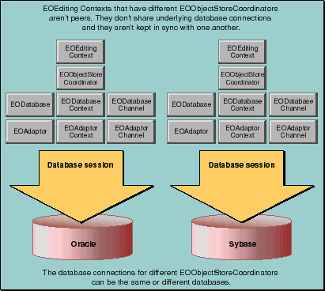

Table of Contents
Table of Contents  Next Section
Table of Contents
Next Section
Table of Contents  Previous Section
Previous Section
The different types of tasks require different connections to the database. Regular user tasks go through a database connection that uses a regular user login while administrative tasks go through a database connection that uses a special administrative login. The two connections use different connection dictionaries, but otherwise use the same models. Consequently, the each connection uses the same entities.
In this scenario, you'd set up a database connection for each user session. Here, too, the database connections use different connection dictionaries, but otherwise use the same models.
Because the transactions use the same model (and potentially the same connection information), they require their own connections to the database.

Figure 44. Multiple EOObjectStoreCoordinators
and "Inside EODatabaseContext".
Setting Up Multiple Coordinators Programmatically
If you are creating your EOEditingContexts programmatically, assigning unique EOObjectStoreCoordinators wherever necessary is straightforward. You simply:
EOObjectStoreCoordinator coordinator =In Objective-C:
new EOObjectStoreCoordinator();
EOEditingContext ec = new EOEditingContext(coordinator);
EOObjectStoreCoordinator *coordinator =
[[[EOObjectStoreCoordinator alloc] init] autorelease];
EOEditingContext *ec = [[EOEditingContext alloc]
initWithParentObjectStore:coordinator];
In Java:
EOObjectStoreCoordinator coordinator =In Objective-C:
new EOObjectStoreCoordinator();
EOEditingContext.setDefaultParentObjectStore(coordinator );
NSApplication.loadNibNamed("MyNib", this);
EOEditingContext.setDefaultParentObjectStore(null);
EOObjectStoreCoordinator *coordinator =After setting the default object store coordinator, new editing contexts (such as the one being unarchived from the nib) use the new EOObjectStoreCoordinator. After loading the nib, set the default parent object store back to the default EOObjectStoreCoordinator by sending a setDefaultParentObjectsStore message with null (nil) as the argument.
[[[EOObjectStoreCoordinator alloc] init] autorelease];
[EOEditingContext
setDefaultParentObjectStore:coordinator];
[NSApplication loadNibNamed:@"MyNib" owner:self];
[EOEditingContext setDefaultParentObjectStore:nil];
Table of Contents Next Section